이사회, 2026년 가을
창립 이사회
첫 이사회에서 일할 자원봉사자를 찾습니다.
소식·기록
2024년부터 해 온 강의와 연주, 그리고 사진입니다.
기록된 강의와 연주마다 무엇을 어디서 했는지 적었습니다.
2024년 1월~2026년 9월
더블린에서 Letters Ensemble과 함께 시작했습니다. 첫 강의에 여섯 명이 왔습니다.
미스·위클로 주와 런던, 파리, 대구에서 연주했습니다.
주간 돌봄 서비스와 노숙인 쉼터, 요양시설에서 연주했습니다.
참가자에게 공연을 안내하고 단체 관람을 준비하기 시작했습니다.
은퇴한 Presentation 수녀님 일곱 분과 개별 레슨을 하고 성부를 나눴습니다.
열다섯 번째 강의는 함께 간 음악회였습니다.
Warrenmount에서 10주 동안 연습했습니다. 부활 음악회는 Clondalkin Lodge에서 무대에 올랐습니다.
창립자가 South Dublin Live에 선정됐습니다. 병원과 Rua Red에서 연주했습니다.
Methodist Centenary Church에서 열었습니다.
파일럿을 바탕으로 한 클래스가 Mulhuddart에서 매주 수요일 열립니다.
최근 사진부터 실었습니다.
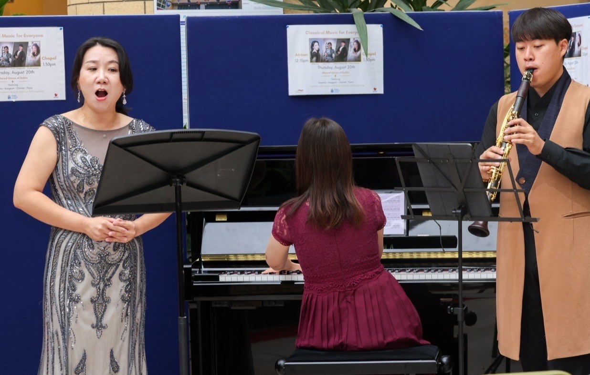
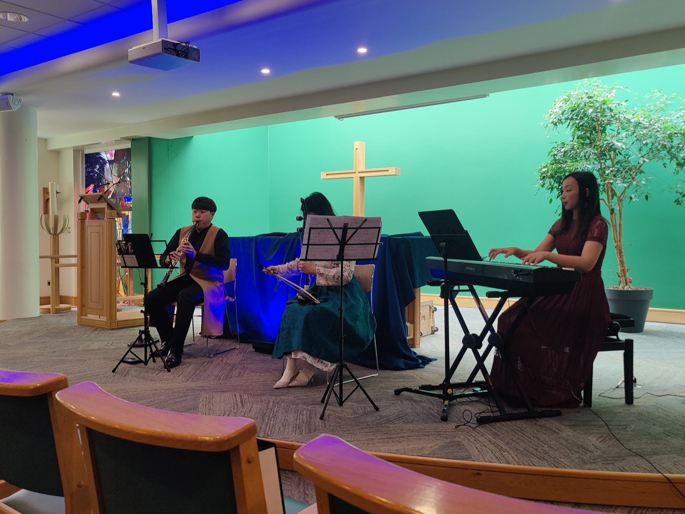
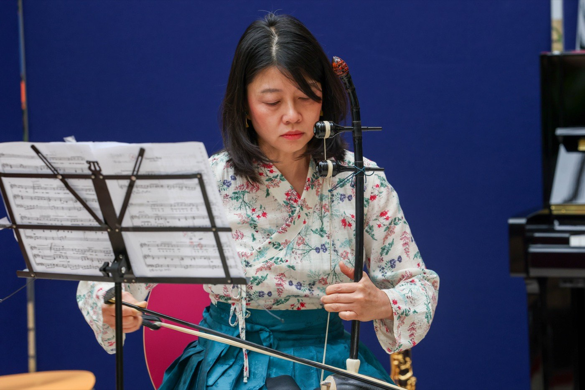
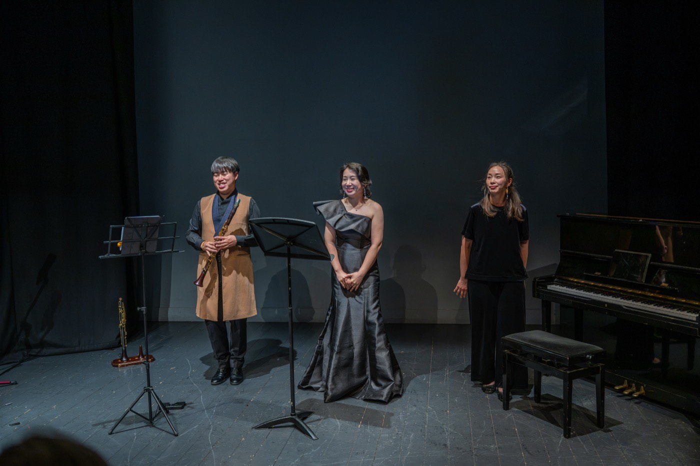
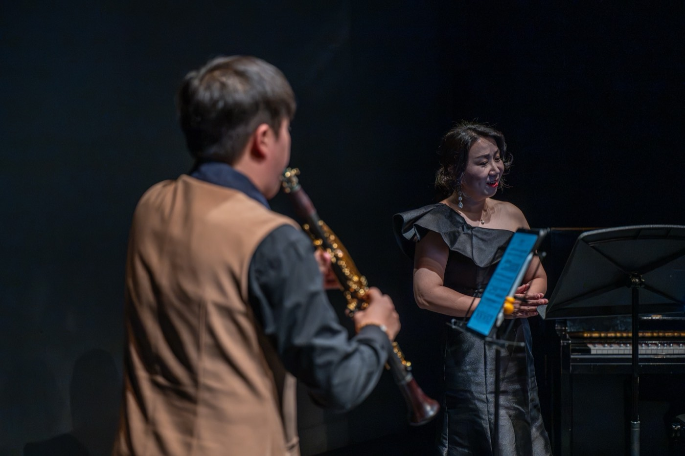
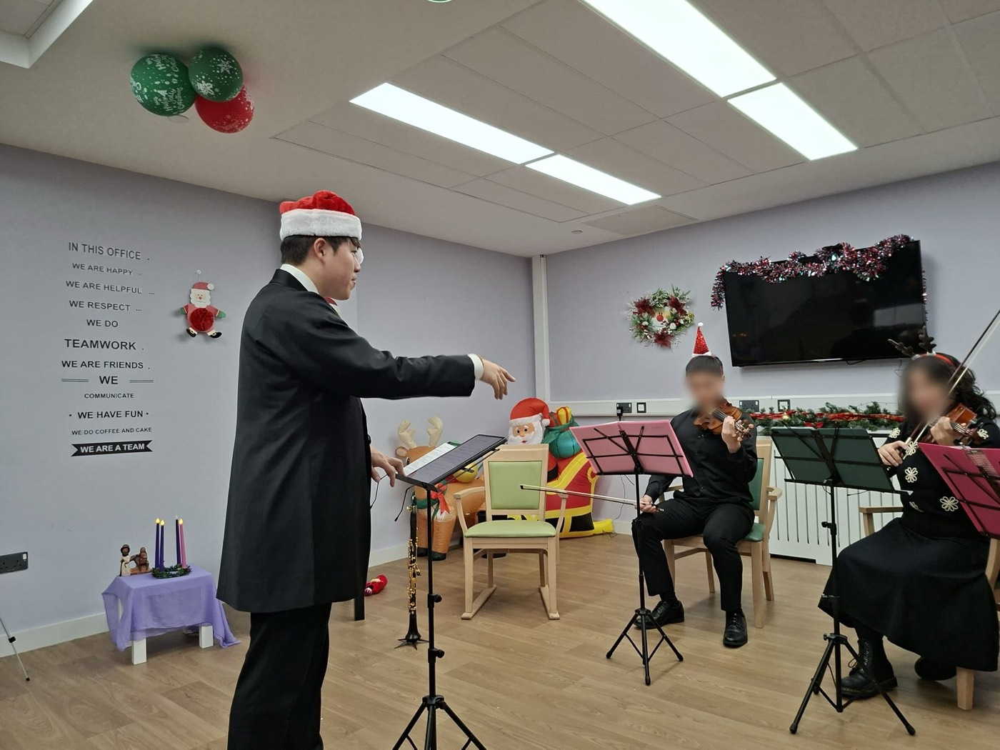
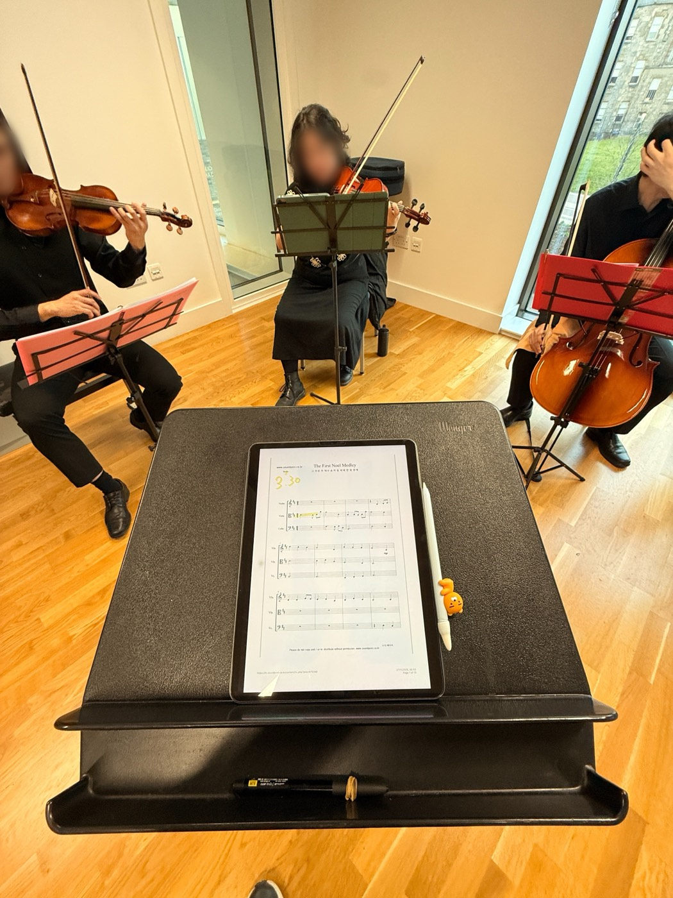
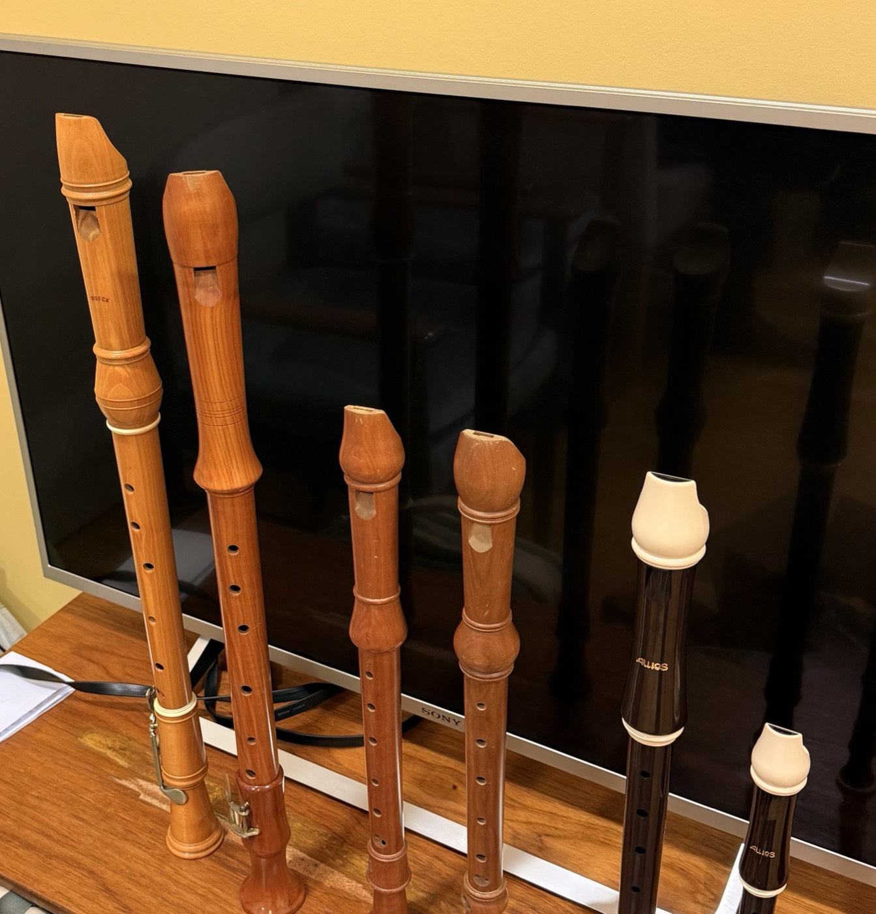
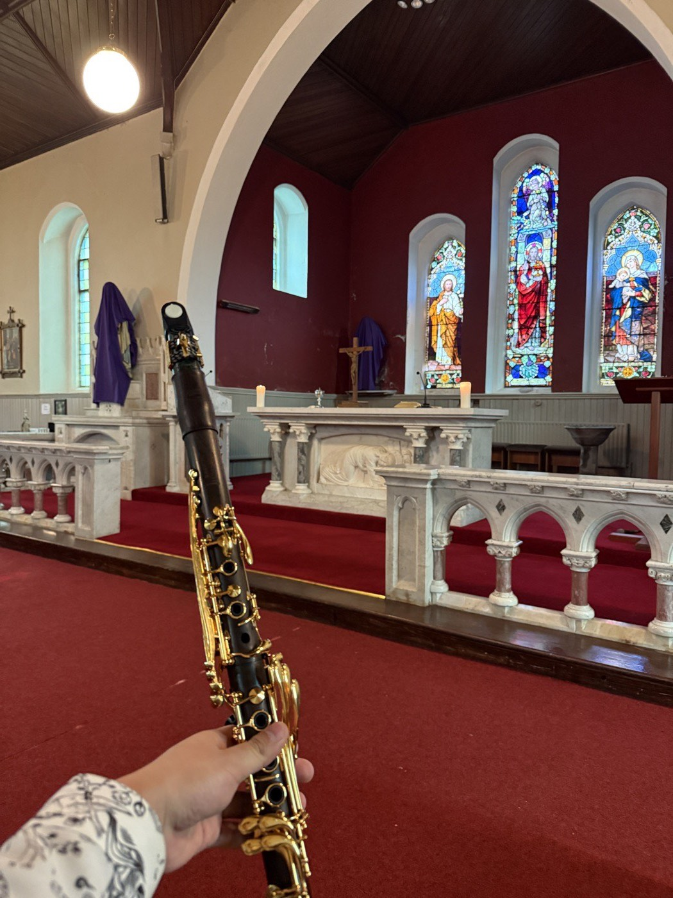
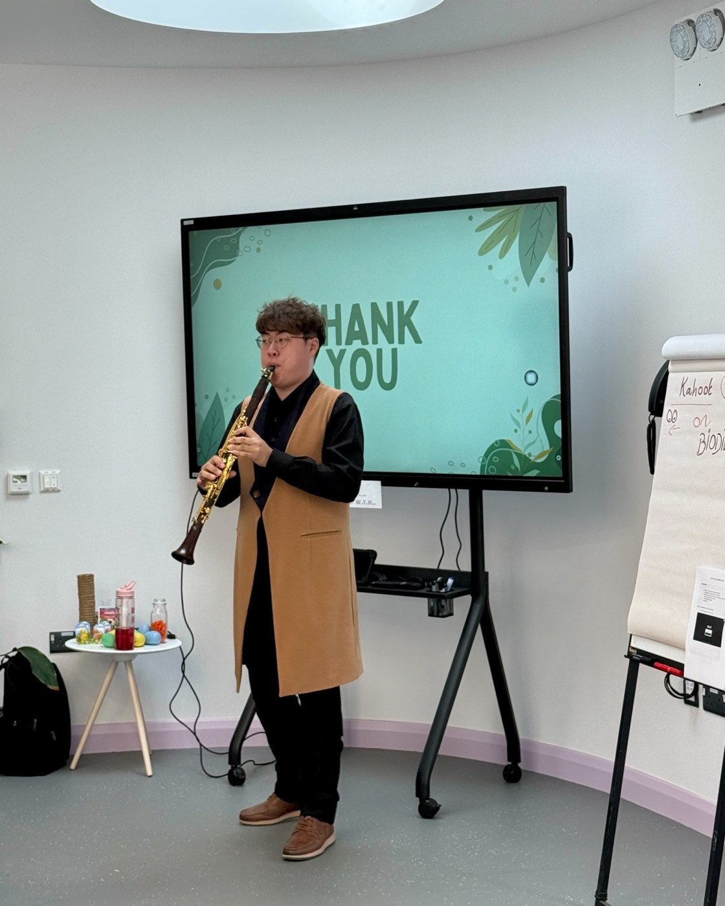
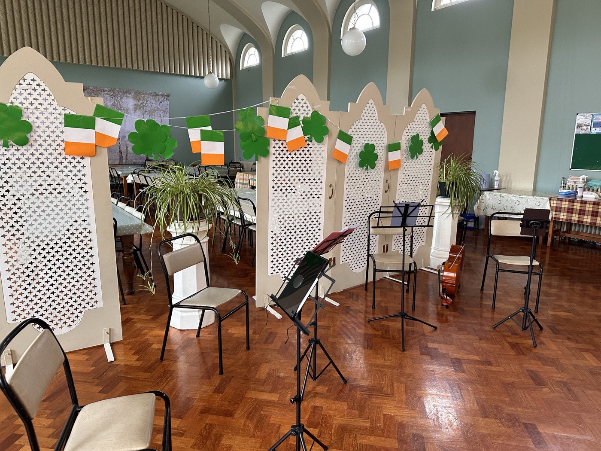
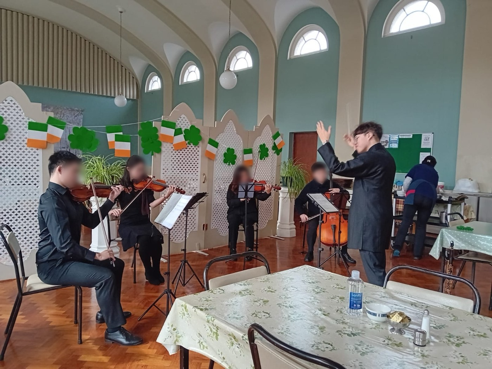
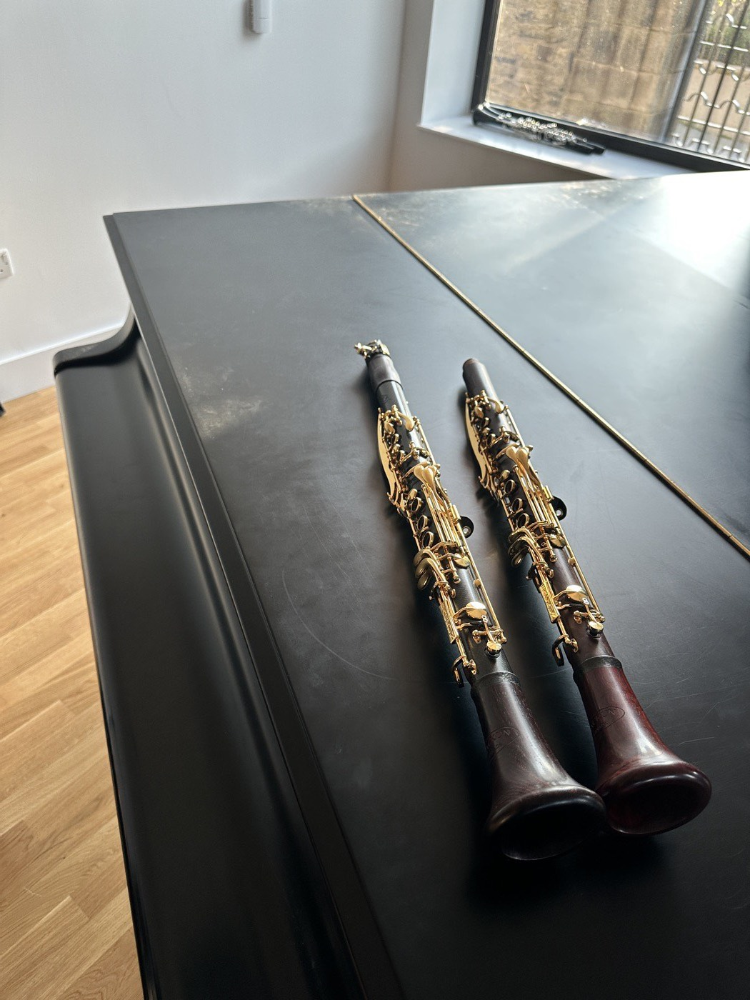